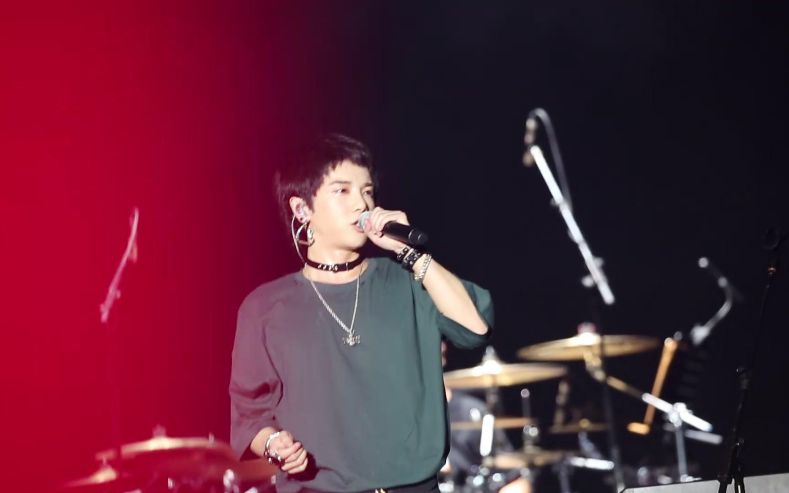

华晨宇

华晨宇（1990年2月7日－），中国大陆男歌手、词曲创作人，湖北省十堰出生。2014年，毕业于武汉音乐学院通俗声乐演唱与编导专业。
演艺经历
2013年－2014年
- 2013年，华晨宇参加湖南卫视《2013快乐男声》，获得全国总冠军，签约天娱传媒。
- 2013年11月2日至2014年3月15日，华晨宇参与的2013快乐男声全国巡回演唱会先后在北京等11个城市举办。
- 2014年1月11日，直通春晚第二场10进6，凭借《亲爱的小孩》、《爱》率先晋级全国6强。
- 2014年1月18日，直通春晚总决赛，演唱《我》、《洋葱》，成为首位获得2014央视马年春晚邀请函的选手。
- 2014年1月30日，首登央视春晚舞台演唱《在那遥远的地方》。
- 2014年1月31日，在2014北京卫视春晚演唱《We are young》。
- 2014年7月25日，主演的《快乐男声》纪实电影《我就是我》上映。
- 2014年8月15日，发行首专主打歌曲《Why nobody fights》。
- 2014年9月6日至7日，在北京万事达中心(原五棵松体育馆)连开两场个人演唱会。
- 2014年9月19日，首张个人专辑《卡西莫多的礼物》发行。
2015年－2018年
- 2015年1月10日，首专的《微光》成为电视剧《何以笙箫默》插曲。
- 2015年3月25日，获QQ音乐巅峰榜年度最佳内地男歌手。
- 2015年6月15日，第二张专辑主打歌《我管你》释出。
- 2015年7月31至8月2日，在上海大舞台连开三场个人演唱会。
- 2016年火星演唱北京站在乐视体育生态中心举办，成为大陆新生代首位开四面台的歌手。
- 2016年12月2日，获2016MAMA亚洲最佳艺人（中国区）奖。
- 2017年年初，前往美国伯克利音乐学院深造。
- 2017年3月14日，三专《H》在京东限量发行。
- 2017年火星演唱会在北京五棵松体育馆连开两场。
- 2017年10月15日，参与录制的《天籁之战》第二季开播。
- 2018年2月8日，出席2018湖南卫视小年夜春晚，并献唱《智商二五零》。
- 2018年3月2日，参加2018湖南卫视元宵喜乐会。
- 2018年4月13日，湖南卫视《歌手2018》华晨宇作为补位歌手参加，是节目开播以来最年轻的补位歌手。
2019年－2021年
- 2019年1月1日，通过“华晨宇工作室官方微博”宣告成立个人工作室。
- 2019年1月5日，参与浙江卫视综艺节目《王牌对王牌》第四季，担任常驻嘉宾之一。
- 2019年10月28日，发行与歌迷共同创作的第一首对唱歌曲《与火星的孩子对话》。
-
- 2019年11月15日起，华晨宇2019火星演唱会于海口五源河体育场连三天开唱。
- 2019年12月4日，华晨宇为忧郁症者撰写的新歌《好想爱这个世界啊》以数字单曲形式于网易云音乐独家发行
- 2020年1月12日，参加2020《王牌对王牌》第五季节目录制。
- 2020年4月8日，数字专辑《新世界NEW WORLD》于网易云音乐独家开启预售。
- 2020年4月24日，获得《歌手·当打之年》总决赛冠军。
- 2021年1月8日，发行专辑《新世界NEW WORLD》。
成就和荣誉
- 2013年参加湖南卫视《快乐男声》获年度总冠军随后发行首张专辑《卡西莫多的礼物》
- 2015年以《卡西莫多的礼物》专辑获得QQ音乐年度最佳男歌手等奖项.
- 2016年以《卡西莫多的礼物》专辑获得酷音乐亚洲盛典年度最佳专辑。
- 2016年获得亚洲新歌榜最佳男歌手奖，同年获得MAMA亚洲最佳艺人奖。
- 2018年参加《歌手2018》获得总决赛亚军。
- 2020年4月8日发行数字专辑《新世界NEW WORLD》。
主要作品
专辑
| 发行时间 |
专辑名称 |
曲目 |
| 2014年9月19日 |
《卡西莫多的礼物》 |
- Why Nobody Fights
- 微光
- Let You Go
- 烟火里的尘埃
- 拆弹专家
- 环游
- 我们都是孤独的
- 不朽
- 卡西莫多的礼物
- 枕边故事
|
| 2015年12月15日 |
《异类》 |
- 我管你
- 国王与乞丐
- 蜉蝣
- 反义词
- 异类
- 逃离乌托邦
- 世界是个动物园
- 变相怪杰
- 写给未来的孩子
- 地球之盐
- 忧伤的巨人
|
| 2017年3月14日 |
《H》 |
- Here We Are
- 巨鹿
- To Be Free
- For Forever
- 我离孤单几公里
- 消失的昨天
- 造物者
- 我的滑板鞋2016
|
| 2020年5月8日 |
《新世界NEW WORLD》 |
A:
- 斗牛
- 好想爱这个世界啊
- 疯人院
- 与火星的孩子对话
- 七重人格
- 神树
- 降临
- 新世界
B:
- 寻
- 无聊人
- 齐天
- 智商二五零
- 寒鸦少年
- 蜡烛(DEMO)
|
单曲
| 发行日期 |
歌曲名称 |
| 2013年8月9日 | 《追梦赤子心》 |
| 2013年10月13日 | 《我和我》 |
| 2013年11月12日 | 《青春再见》 |
| 2013年11月17日 | 《Hi!自由》 |
| 2013年12月23日 | 《趁你还年轻》 |
| 2014年9月9日 | 《自己的太阳》 |
| 2014年12月3日 | 《癌》 |
| 2015年2月9日 | 《就这Young》 |
| 2015年2月20日 | 《高手归来》 |
| 2016年3月7日 | 《横冲直撞》 |
| 2016年4月7日 | 《火星情报局》 |
| 2016年11月8日 | 《穿心》 |
| 2017年1月8日 | 《挂彩》 |
| 2017年4月11日 | 《随我》 |
| 2017年6月15日 | 《嗨夏》 |
| 2018年6月5日 | 《夏之旅》 |
| 2019年1月13日 | 《声希》 |
| 2020年2月25日 | 《你要相信这不是最后一天》 |
| 2020年4月2日 | 《渴不停》 |
演出照
生平
1990年2月7日，出生于湖北省十堰市竹山县。
2007年至2010年间，就读于武汉育才美术高中。
2014年，毕业于武汉音乐学院通俗声乐演唱与编导专业。